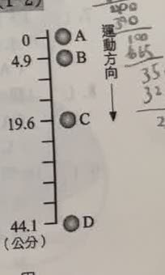
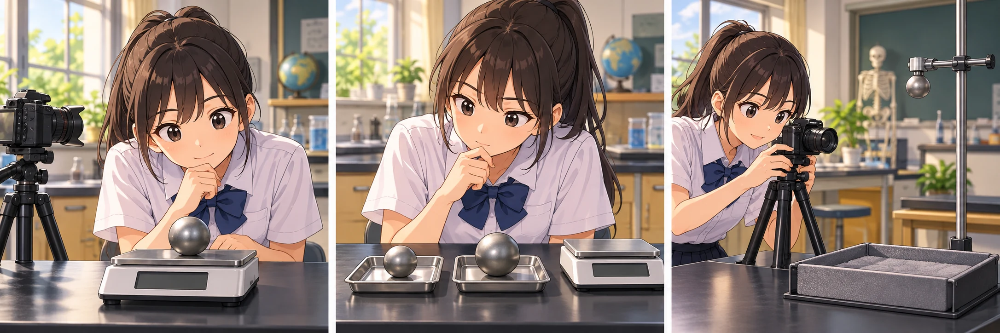
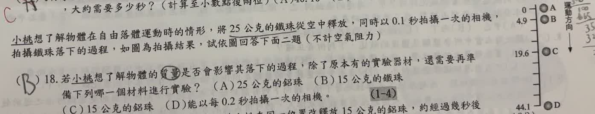
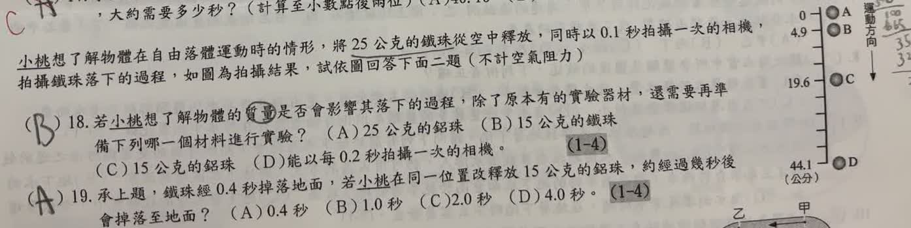

完整原題
作答所需文章／材料
小桃想了解物體在自由落體運動時的情形，將25公克的鐵球從空中釋放，同時以0.1秒拍攝一次的相機，拍攝鐵球落下的過程，如圖為拍攝結果，試依圖回答下面二題（不計空氣阻力）。
理化第18題｜只改變質量的控制變因
理化第19題｜同高度不同質量的自由落體時間
先想一想，再查看答案、解說與原圖
理化第18題｜只改變質量的控制變因
分享原卷｜第 18 題 · 首次出題日期 2026-10-21 · 原AI對話 ↗
逐項解析
| 選項與原句 | 判讀 | 句意與判斷理由 |
|---|---|---|
| (A) 25公克的鋁球 | 不選 | 質量仍為25公克，卻改變材質，不能單獨比較質量。 |
| (B) 15公克的鐵球 | 應選 | 與原來鐵球同材質、質量由25改15公克，符合只改質量。 |
| (C) 15公克的鋁球 | 不選 | 同時改變質量及材質，不如B能控制其他條件。 |
| (D) 能以每0.2秒拍攝一次的相機 | 不選 | 只改拍攝間隔，沒有改變所研究的物體質量。 |
詳細說明與解題步驟
要研究質量的影響，質量是操縱變因，其他可控制條件應盡量相同。原本是25公克鐵球，因此再準備15公克鐵球，保持材質相同，只比較不同質量，選B。
拍照頻率要沿用每0.1秒一次；改成每0.2秒只是改變測量方式，不是在檢驗質量。題目已說不計空氣阻力，理想自由落體加速度不因質量不同而改變。

① 先找原本的條件
原本用25公克鐵球，從空中靜止釋放；相機每0.1秒拍攝一次。題目要比較的是「質量」對落下過程的影響。
② 換質量，不換材質
再準備15公克鐵球，與原來25公克鐵球比較。同樣是鐵，只改變質量；若改用鋁球，就連材質也一起改了。
③ 讓比較條件一致
沿用同一相機，每0.1秒拍攝一次；釋放高度與方式也保持相同。不計空氣阻力時，不能先認定重球一定落得較快。
④ 研究質量，只改一項條件
答案 B：15公克的鐵球
- 操縱變因：鐵球的質量。
- 控制條件：材質、釋放高度、方式與拍攝間隔。
- 改成每0.2秒拍照，是改測量方式，不是改質量。
核對註記：已核對題幹、全部選項與必要材料；教材對應課次未確認，歸綜合。
原圖（僅本題）

理化第19題｜同高度不同質量的自由落體時間
分享原卷｜第 19 題 · 首次出題日期 2026-10-21 · 原AI對話 ↗
逐項解析
| 選項與原句 | 判讀 | 句意與判斷理由 |
|---|---|---|
| (A) 0.4秒 | 應選 | 同位置、同樣由靜止釋放且不計空氣阻力，加速度相同，落地時間仍0.4秒。 |
| (B) 1.0秒 | 不選 | 質量變輕不會在此模型下把落地時間改成1秒。 |
| (C) 2.0秒 | 不選 | 沒有改變高度或初速，不能因質量改變就延長時間。 |
| (D) 4.0秒 | 不選 | 質量不同不代表落地時間會增加十倍。 |
詳細說明與解題步驟
原本25公克鐵球與改用的15公克鋁球，均在同一位置由靜止釋放。不計空氣阻力時，兩者重力加速度相同，故通過同一高度所需的時間也相同，仍為0.4秒，選A。
質量較大時重力也較大，但不代表自由落體加速度較大；不能把「受力大小」直接當成「落得比較快」。這裡比較的是題給理想條件，不把結論套到所有有空氣阻力的物體上。
① 先找相同的釋放條件
原本是25公克鐵球，改成15公克鋁球。兩次都在同一位置由靜止釋放，而且題目說不計空氣阻力，落下高度與初速相同。
② 質量不同，加速度仍相同
不計空氣阻力時，鐵球和鋁球的重力加速度相同。質量較大，重力也較大，卻不能因此說它在自由落體時加速得比較快。
③ 同樣的路程，花同樣時間
高度、初速、加速度都相同，落地時間就相同。鐵球用0.4秒，換成鋁球仍是0.4秒；不能把質量比直接當作落地時間比。
④ 同高度靜止釋放，質量不同也花同樣時間
答案 A：0.4秒
- 相同高度、相同初速，且不計空氣阻力。
- 鐵球與鋁球的重力加速度相同。
- 質量不同，不會改變這題的落地時間。
核對註記：已核對題幹、全部選項與必要材料；教材對應課次未確認，歸綜合。
原圖（僅本題）
